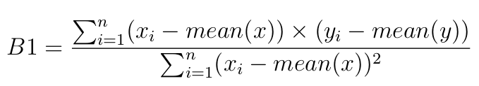
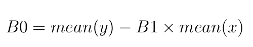
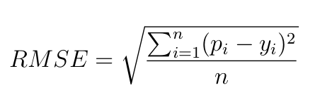

Linear regression is a linear model that assumes a linear relationship between the input variables (x) and the single output variable (y). More specifically, that y can be calculated from a linear combination of the input variables (x). When there is a single input variable (x), the method is referred to as simple linear regression.
This is a line where y is the output variable we want to predict, x is the input variable
we know and B0 and B1 are coefficients that we need to estimate that move the line around.
In machine learning B0 is called the bias, because it is added to offset all predictions that
we make.
The B1 term is called the slope because it defines the slope of the line or how x
translates into a y value before we add our bias.
The goal is to find the best estimates for the coefficients to minimize the errors in predicting y from x
The error score for our predictions is called the Root Mean Squared Error or RMSE.



where pi is the prediction of the line i calculate using B0 and B1
Given the example bellow:
mean(x) = 3
mean(y) = 2.8
| X | Y | x - mean(x) | y - mean(y) | (x - mean(x)) * (y - mean(y)) | (x - mean(x))2 |
|---|---|---|---|---|---|
| 1 | 1 | -2 | -1.8 | 3.6 | 4 |
| 2 | 3 | -1 | 0.2 | -0.2 | 1 |
| 4 | 3 | 1 | 0.2 | 0.2 | 1 |
| 3 | 2 | 0 | -0.8 | 0 | 0 |
| 5 | 5 | 2 | 2.2 | 4.4 | 4 |
B1 = Σ (xi - mean(xi))*(yi-mean(yi)) / Σ (xi - mean(xi))2
B1 = (1-3)*(1-2.8) + (2-3)*(3-2.8) + (4-3)*(3-2.8) + (3-3)*(2-2.8) + (5-3)*(5-2.8) / (1-3)2 + (2-3)2 + (4-3)2 + (3-3)2 + (5-3)2
B1 = 8 / 10
B1 = 0.8
And so:
B0 = mean(y) - B1 * mean(x)
B0 = 2.8 - (0.8 * 3)
B0 = 0.4
Prediction is now:
Predition(x) = B0 + B1 * x Predition(x) = 0.4 + 0.8 * x
| X | P(x) = 0.4 + 0.8*x | Prediction - y |
|---|---|---|
| 1 | 1.2 | 0.2 |
| 2 | 2 | -1 |
| 4 | 3.6 | 0.6 |
| 3 | 2.8 | 0.8 |
| 5 | 4.4 | -0.6 |
RMSE = SQRT( Σ(Predictioni - yi)2 / numberOfElements)
RMSE = SQRT( (1.2-1)2 + (2-3)2 + (3.6 - 3)2 + (2.8-2)2 + (4.4-5)2 / 5)
RMSE = 0.692820323
The way this optimization algorithm works is that each training instance is shown to the model one at a time. The model makes a prediction for a training instance, the error is calculated and the model is updated in order to reduce the error for the next prediction. This procedure can be used to find the set of coefficients in a model that result in the smallest error for the model on the training data. Each iteration, the coefficients called weights (w) in machine learning language are updated using the equation